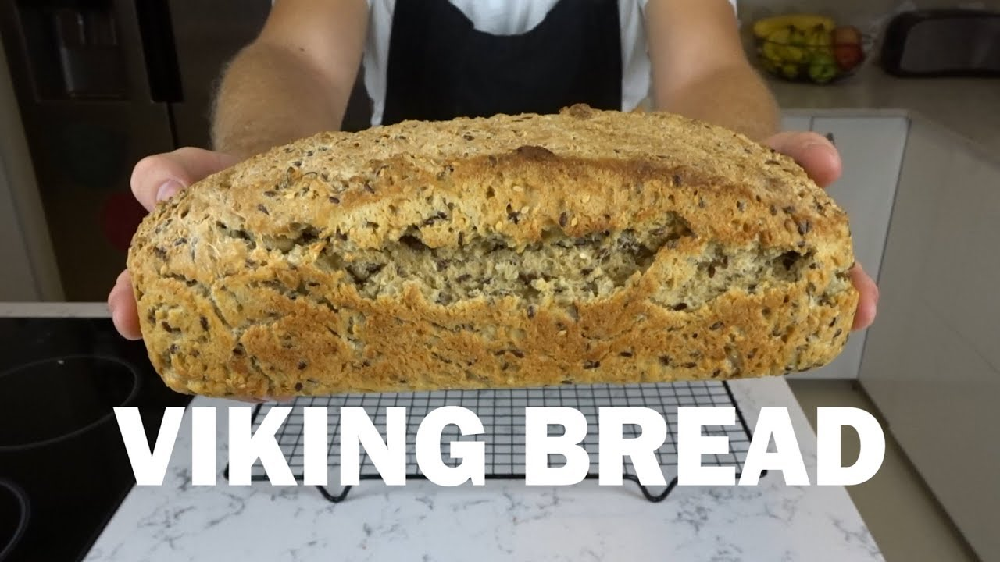

Viking Bread

Description:
This Viking Bread Recipe is an easy but hearty and delicious quick bread that is
perfect side dish to almost any meal. Simple enough that it is the perfect
bread to bake with kids in the kitchen!
Ingredients:
- 3 cups whole wheat flour
- 2 cups all purpose flour
- 1 cup old fashioned oats
- 1 teaspoon baking soda
- 1 teaspoon salt
- 2 cups water
- 1/3 cup rolled oats (For topping)
Steps:
- Do not preheat the oven.
- In a large bowl, combine the whole wheat flour, all purpose flour, oats, baking soda and salt.
- Add the water and stir with a wooden spoon until it is as incorporated as you can get it.
- Knead the dough with your hands for a few minutes until you get the rest of the ingredients all the way mixed in.
- Divide the dough into 6 even balls of dough.
- Place the balls onto a baking stone and sprinkle the remaining oats on top.
- Place the baking stone in the oven and turn the oven on to 375 F.
- Bake for 20-30 minutes, or until the tops are starting to turn golden brown.
- Pull the baking stone out of the oven and let it cool for a few minutes before you enjoy!
Home